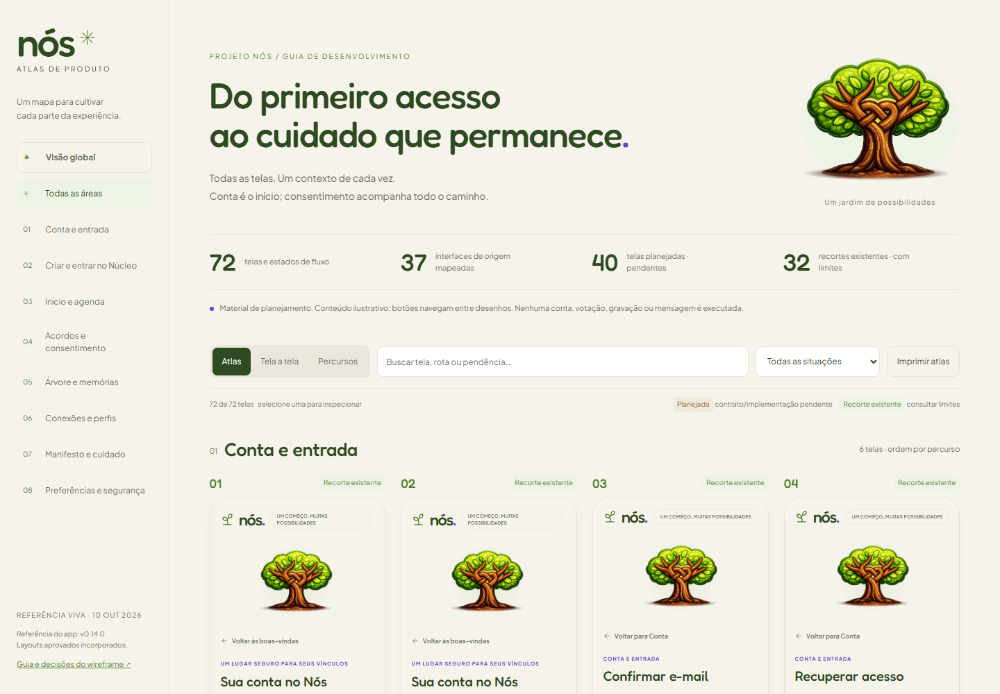
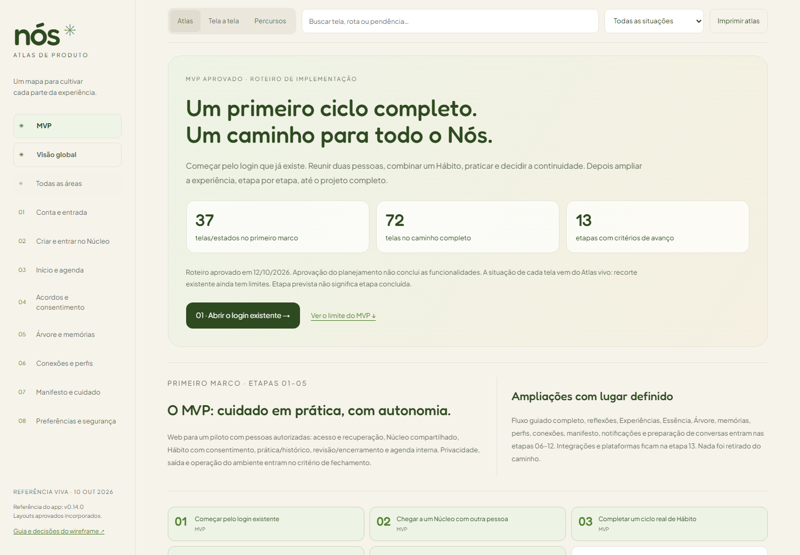
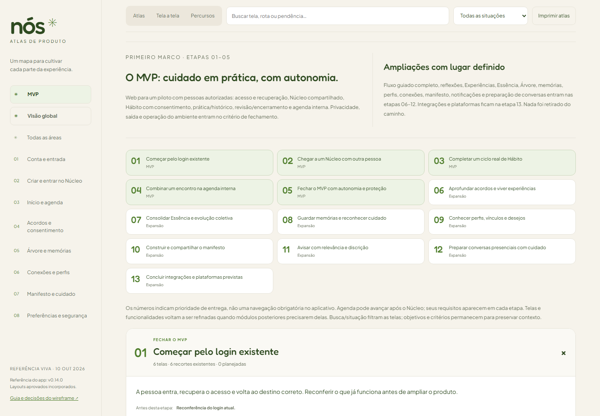
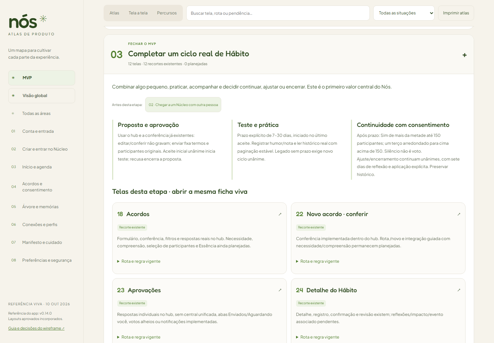

PROJETO NÓS · v0.14.0 · 2026-10-12
MVP aprovado — do login à conclusão do projeto
Guia acima da Visão global, 13 etapas e cobertura das 72 telas/estados. Primeiro marco: etapas 01–05, com 37 telas/estados, incluindo bases existentes. Aprovação do planejamento não conclui as funcionalidades.
O antes usa snapshots reais do Atlas anteriores à criação da guia MVP, já com o recorte de Hábito v0.14.0. O depois mostra o roteiro aprovado. A faixa tela_01-a-tela_72 identifica o escopo do planejamento; estas seis capturas são amostras da ferramenta, sem inventar um ID de tela do aplicativo. Não existe rota MVP equivalente no produto nem comparação funcional com produção.
Abrir MVP vivo · Roteiro aprovado · Registro
Antes — Atlas sem a guia MVP
Estado anterior preservado; telas atuais já estavam no inventário.
Depois — roteiro aprovado
Guia MVP prioritária, login existente como início e limites explícitos.
13 etapas de entrega — computador
Prioridade de implementação e fronteira do primeiro marco.
Ciclo do Hábito — computador
Objetivo, dependência, funcionalidades e recortes existentes.
Capturas locais sem dados pessoais reais, gravação de contas ou votos. Situações, contratos e desenhos são reaproveitados da fonte viva; funções futuras conservam suas pendências.